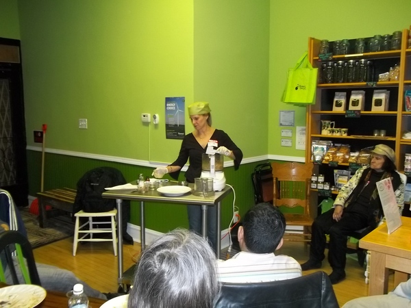

Programs
In addition to our general monthly events which are published on Meetup.com/ChicagoVeg , we also offer separate programs to better accommodate specific interests or segments of the community. Different programs normally based on separate Meetup groups:
Please follow the corresponding links for more details about each program.